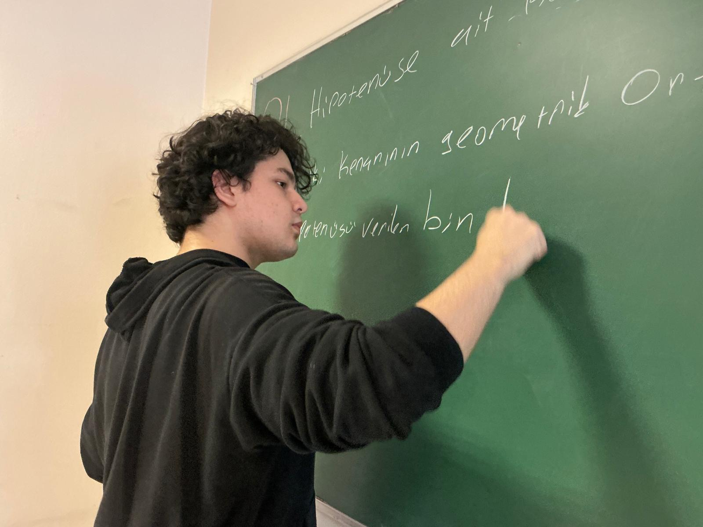
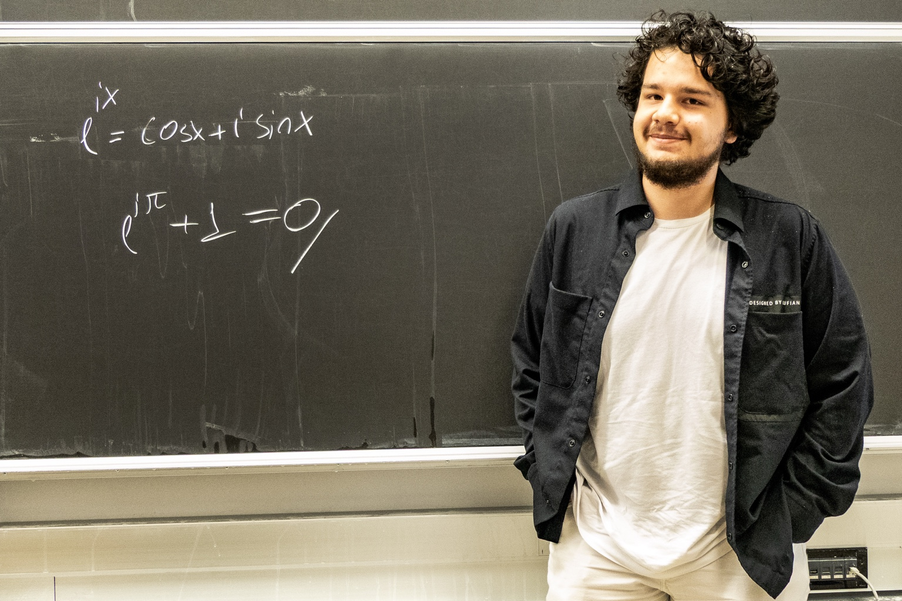

Ahmet Lütfi Fatih
Hi, I’m Ahmet. I like the liberties mathematics takes with ordinary words. In the 5-adic numbers, 626 is closer to 1 than 6 is. Subtract 1 from each and count the factors of 5. In the projective plane, even parallel lines get to meet. I think Euclid would want a word about the small print.
I’m also drawn to the place where linear algebra, differential equations and differential geometry meet. A tangent plane lets me do linear algebra on a curved surface, at least in a small neighbourhood. Give me a vector field on that surface and a differential equation tells me which way to walk. How far I can trust my flat sketch is where the geometry gets interesting.
I also build unmanned aircraft. Over six years of TEKNOFEST projects, I’ve built eleven drones.
I play the ney, guitar and piano, and I write poetry. I practise both traditional Turkish archery and Olympic recurve archery. I used to play basketball, too. Of the three sports, that was the one where the target occasionally had someone standing in front of it waving both arms.


A little maths history
PROMYS Italia. I spent the summer of 2026 in Padua studying number theory, including p-adic numbers, and exploring projective geometry.
Ross Mathematics Program (RP²). In autumn 2026 I began studying geometric group theory. I particularly like Cayley graphs. Start at the identity, take a walk, and the word you’ve just spelt tells you where you are in the group.
Euler Circle. In January 2027 I’ll be joining a mathematics research project there.
I was a maths olympiad competitor and once represented Türkiye in international competition.
Papers
Papers to come. I have an unlimited supply of positive integers and am working on the papers to match.